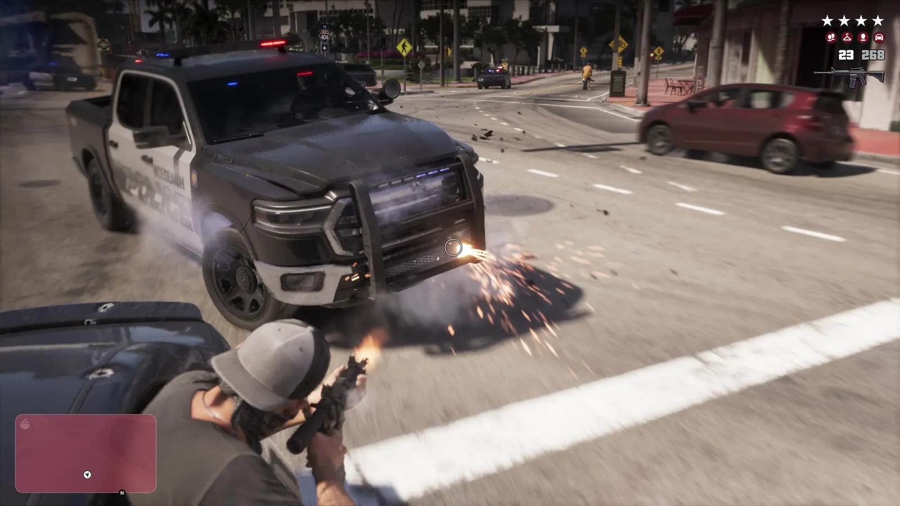
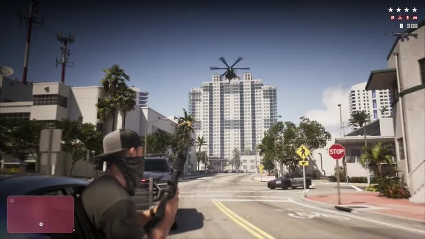
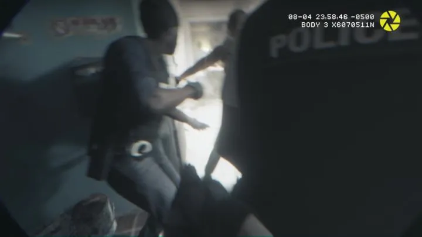

Розыск и криминальный профиль в GTA 6
Обновлено:

Розыск в GTA 6 устроен иначе, чем в GTA 5: по данным превью, полиция реагирует на свидетелей и камеры.
- Звёзды розыска в интерфейсе.
Подробно
В перестрелке на 14:06–14:14 «Расширенного показа» в правом верхнем углу видны звёзды розыска. В первом трейлере (0:49) есть кадр с полицейской бодикамеры.
Кадры


Где посмотреть
Таймкоды — чтобы найти момент в официальном видео Rockstar.
| Где | Что в кадре |
|---|---|
| «Расширенный показ», 14:09 | Полиция атакует, звёзды розыска |
| «Расширенный показ», 14:06 | Перестрелка из машины |
| Трейлер 1, 0:49 | Бодикамера полицейского |
По данным превью
Это рассказали журналисты, которые видели игру до релиза. Rockstar официально подробности не подтверждала.
Уровень розыска появляется, только если преступление видели свидетели или камеры. Полиция учитывает приметы, оружие и машину, а криминальный профиль запоминает, действуете вы аккуратно или жестоко.
GTABase и VICE (превью журналистов)
Розыск и криминальный профиль и реальность

Кадры и названия: Rockstar Games — трейлеры GTA VI, «Расширенный показ» (An Extended Look), официальные скриншоты. После релиза 19 ноября 2026 года дополним страницу данными из игры.
Каждый день — одно сравнение: кадр игры рядом с реальным фото. Подписывайтесь:
YouTubeInstagramTikTok